보낸 편지 · 무료 답장으로 바꾸기 버튼
- 지금: 맨 아래 회색 글자 "무료 답장으로 바꾸기 · 40리프"라 버튼으로 잘 안 보여요.
- 모든 안 공통: 버튼을 편지 바로 아래로 올리고, "답장이 오면 서로의 연락처가 공개돼요" · "읽지 않으면 3일 뒤 쓴 리프가 돌아와요"는 버튼 아래로 내려요.
- 교체 아이콘: 새 안 E~J는 모두 교체 아이콘이 들어가요.
- 공통 버튼: 버튼 시스템(
buttons.css)의 .btn을 그대로 써요. A · B · D는 Secondary(연한 파랑 바탕 + 파랑 글자), C는 Tertiary(흰 바탕 + 회색 선).
카드 전체가 버튼 · 아이콘 없이
교체 아이콘을 빼고 글 · 리프 · 꺾쇠(›)만. 색은 모두 뉴트럴, 누르는 동안 바탕 cool-neutral-50 → 100.
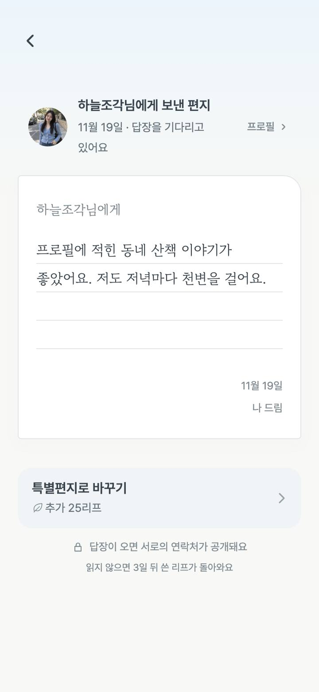
X1두 줄 · 회색 카드 · "특별편지로 바꾸기" + "잎 추가 25리프" + ›
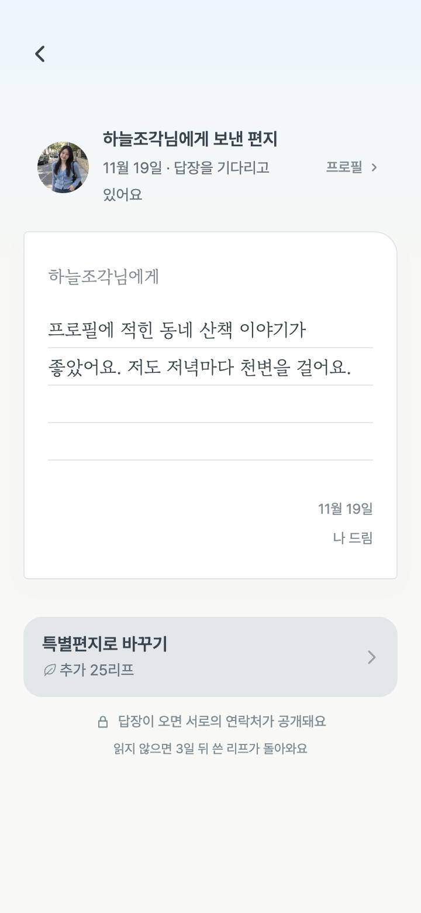
X1 누름누르는 동안 바탕 cool-neutral-100
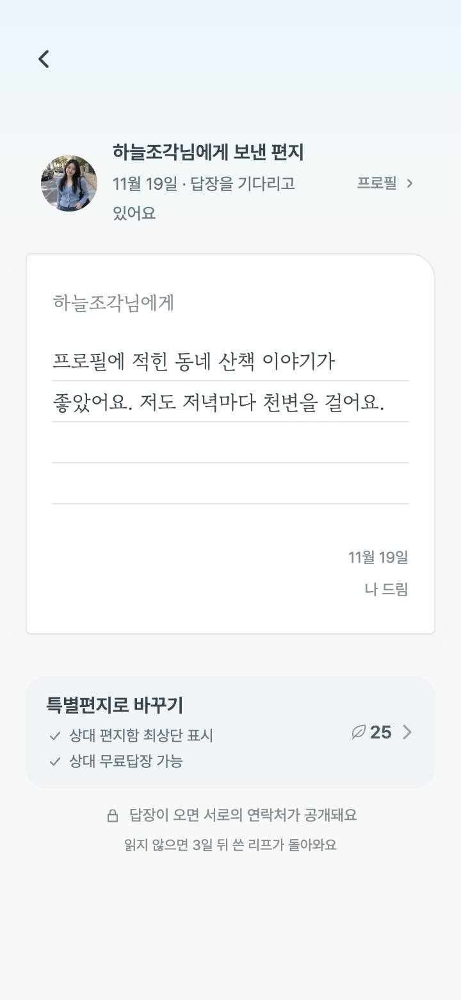
X2혜택 두 줄 · 회색 체크 두 줄 + 오른쪽 "잎 25 ›"
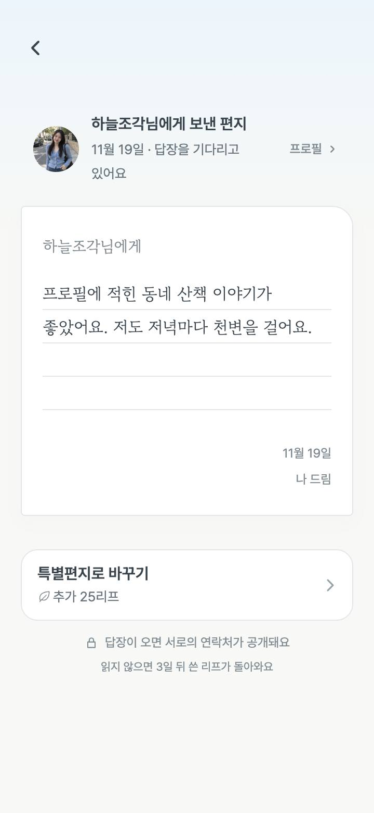
X3흰 카드 · X1과 같고 흰 바탕 + 얇은 선
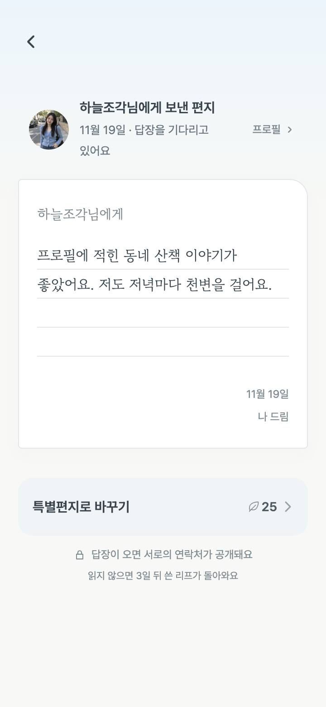
X4한 줄 · "특별편지로 바꾸기" + 오른쪽 "잎 25 ›". 가장 짧아요
카드 전체가 버튼 · 뉴트럴
따로 있던 "바꾸기" 버튼을 빼고 카드 어디를 눌러도 바뀌어요. 오른쪽 꺾쇠(›)로 누를 수 있다는 걸 보여주고, 누르는 동안은 바탕이 한 단계 진해져요(cool-neutral-50 → 100).
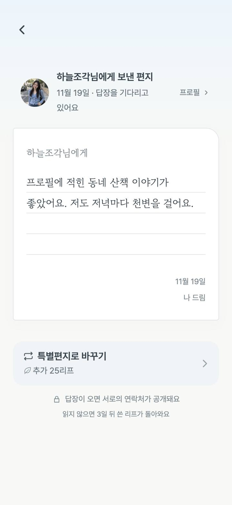
W1제목 앞 교체 아이콘 · 회색 카드 · "교체 특별편지로 바꾸기" + "잎 추가 25리프" + ›
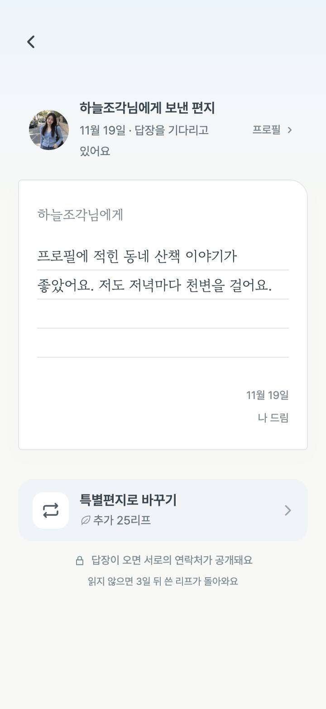
W2흰 아이콘 타일 · 회색 카드 안 흰 타일 40에 교체 아이콘, 제목 · 추가 25리프 · ›
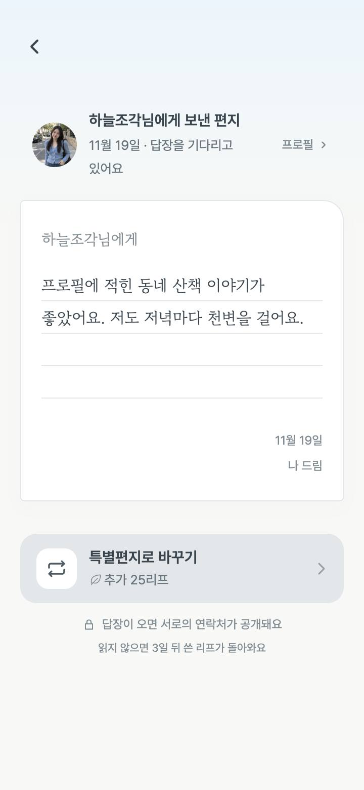
W2 누름누르는 동안 바탕 cool-neutral-100
W3혜택 두 줄 · 회색 체크 두 줄, 오른쪽 "잎 25 ›"
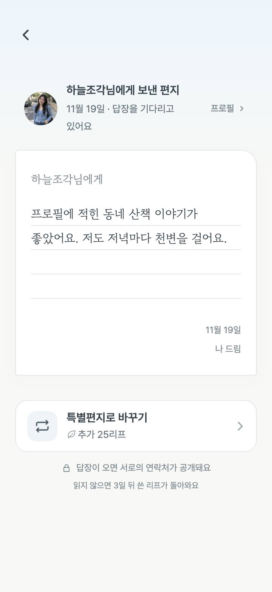
W4흰 카드 + 회색 타일 · 흰 바탕 + 얇은 선, 타일만 회색
J · 뉴트럴 색 (특별편지 25 기준)
파랑을 빼고 카드 바탕 · 버튼 · 아이콘을 모두 cool-neutral로. 글은 "특별편지로 바꾸기"(보낸 일반 편지 → 특별편지, 추가 25리프).
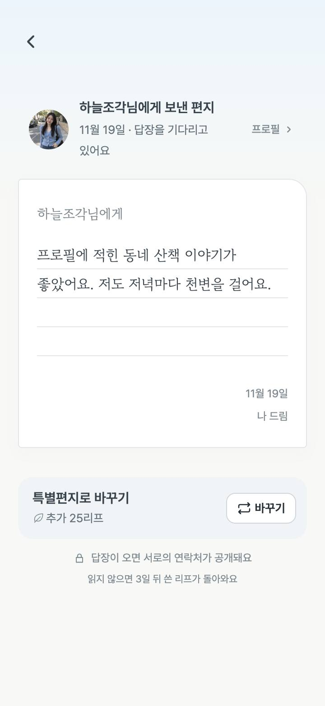
N1회색 카드 + 흰 버튼 · 카드 cool-neutral-50(선 없음), 버튼은 공통 Tertiary S(흰 바탕 + 회색 선). 아래 "잎 추가 25리프"
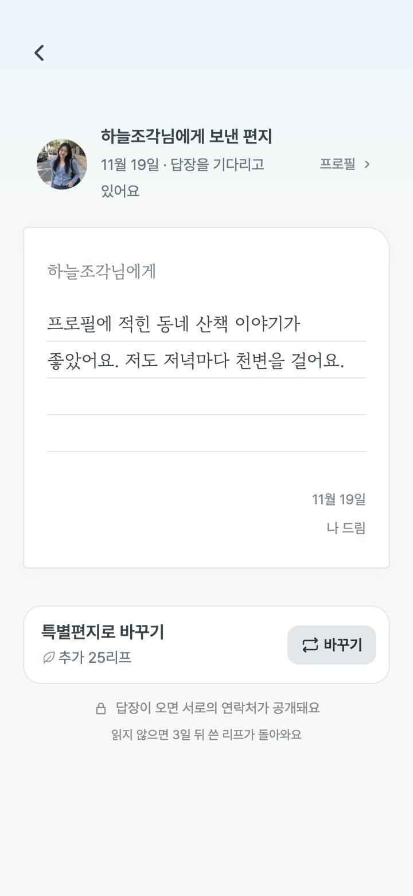
N2흰 카드 + 회색 버튼 · 카드 흰 바탕 + cool-neutral-100 선, 버튼 cool-neutral-100 바탕 + 900 글자(새 Neutral 버튼)
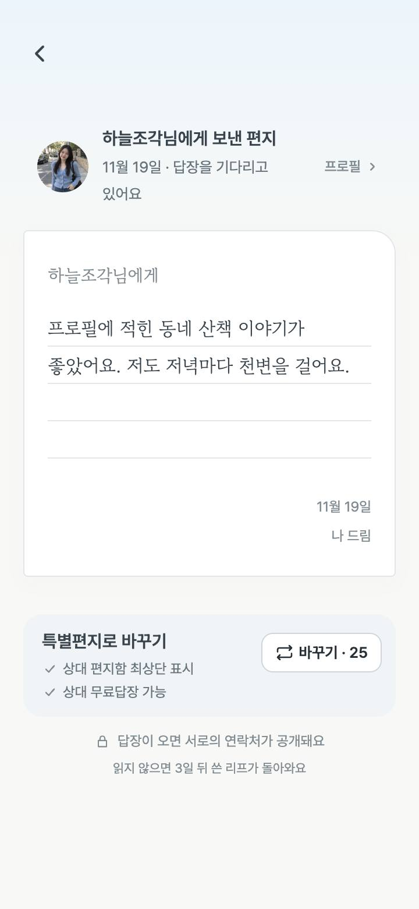
N3N1 + 혜택 두 줄 · 보내기 시트와 같은 체크 두 줄(회색), 버튼에 "바꾸기 · 25"
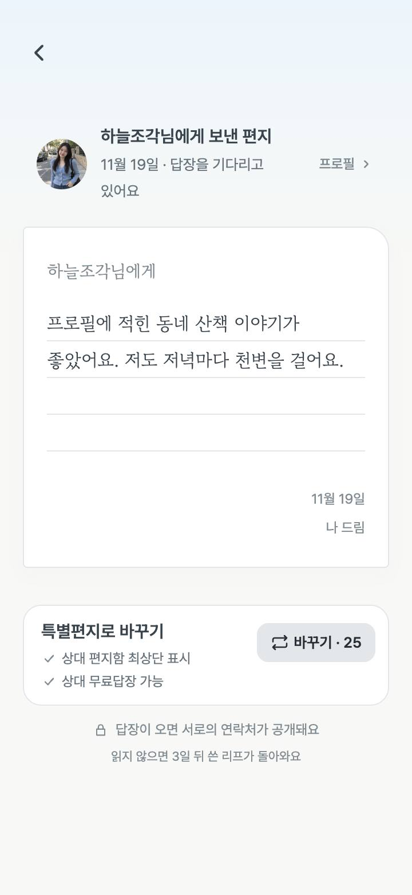
N4N2 + 혜택 두 줄 · 흰 카드 + 회색 버튼, 체크 두 줄
D 묶음 + 교체 아이콘 · 새 안
D처럼 한 카드에 묶고, 교체 아이콘은 앱 아이콘 세트의 repeat(ic-repeat, 화살표 두 개가 도는 모양)를 써요. 버튼은 모두 공통 .btn.
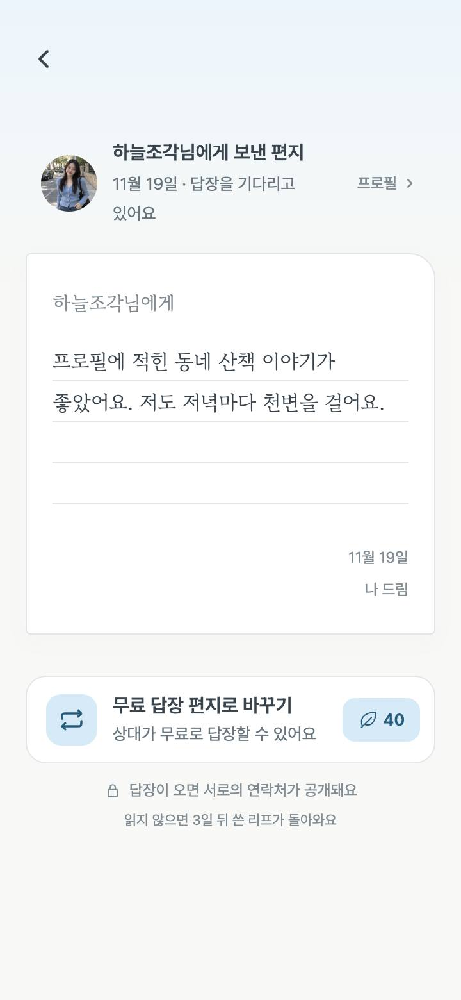
E아이콘 타일 + 40 버튼 · 왼쪽 연한 파랑 타일 40에 교체 아이콘, 오른쪽 Secondary S "잎 40"
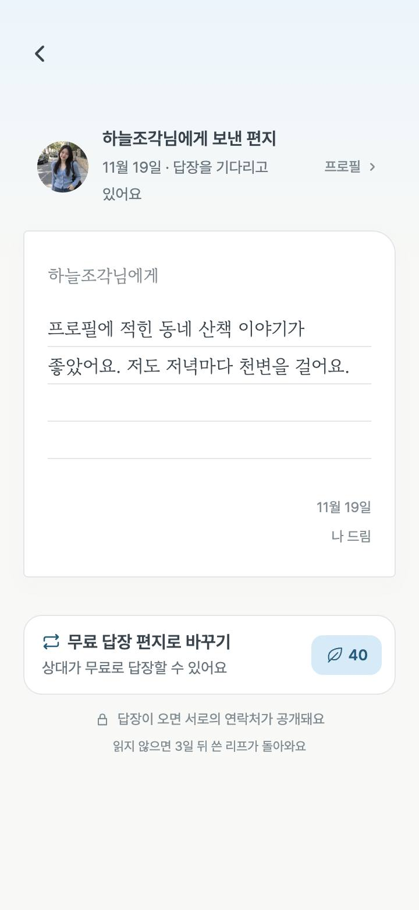
F제목 앞 작은 아이콘 · 타일 없이 제목 앞에 16 아이콘. D와 가장 비슷하고 가벼워요
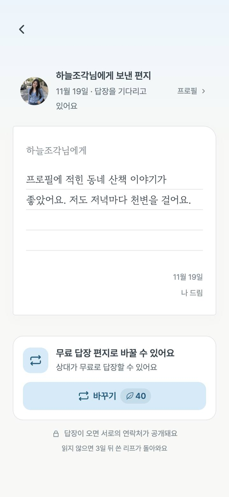
G카드 안 큰 버튼 · 위에 아이콘 타일 + 안내, 아래 꽉 찬 Secondary M "(교체) 바꾸기 · 잎 40"
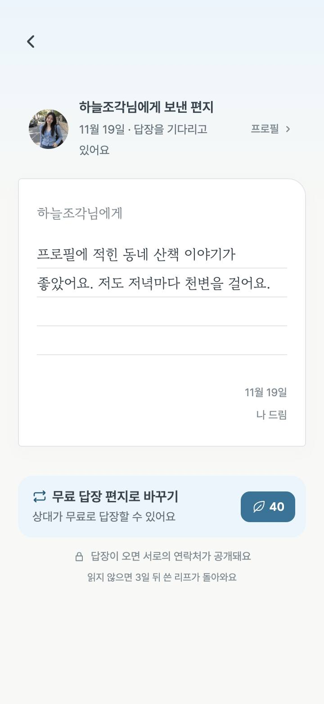
H연한 파랑 카드 + 진한 버튼 · 카드 바탕 sky-50, 오른쪽 Primary S "잎 40". 가장 눈에 띄어요
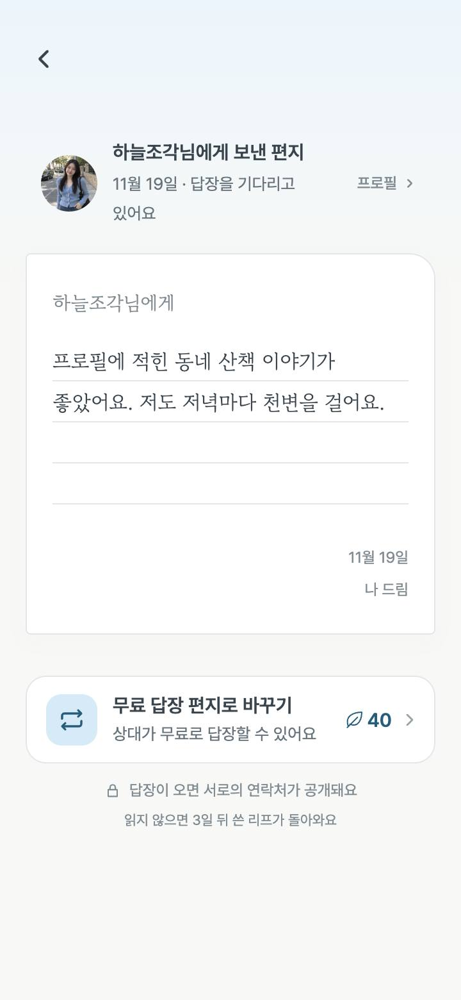
I카드 전체가 버튼 · 타일 + 안내 + 오른쪽 "잎 40 ›". 어디를 눌러도 돼요
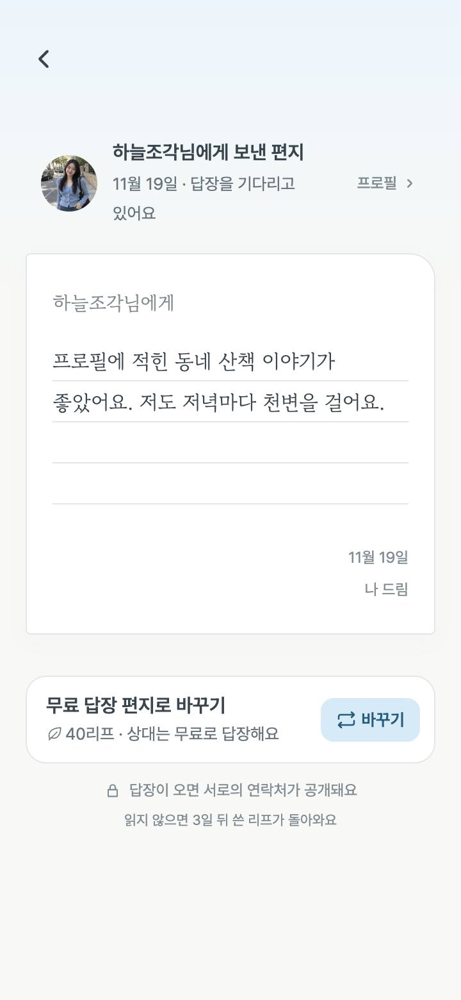
J가격은 설명 줄, 버튼은 "바꾸기" · 설명 "잎 40리프 · 상대는 무료로 답장해요", 오른쪽 Secondary S "(교체) 바꾸기"
앞서 본 안
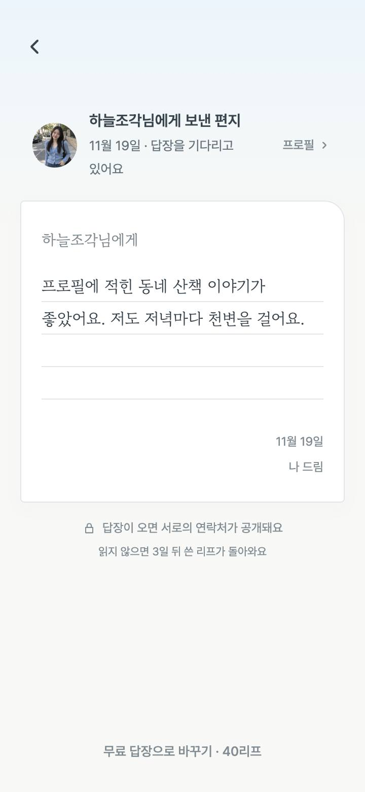
지금맨 아래 회색 글자
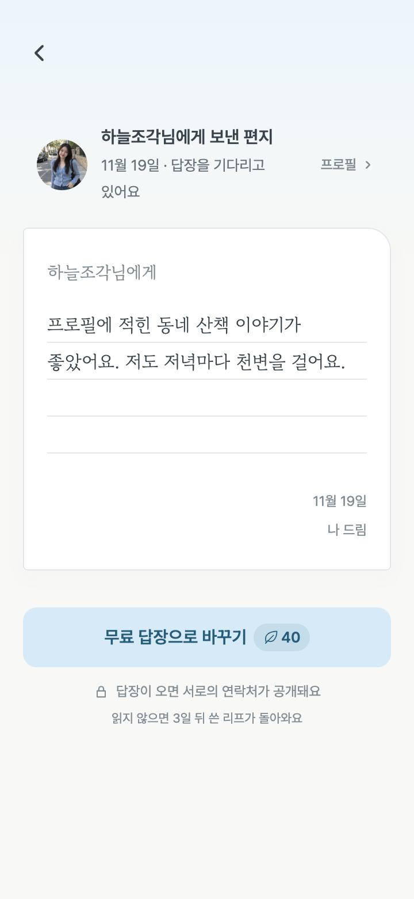
ASecondary L · 꽉 찬 폭 · 글자 + 리프 40 칩. 받은 편지 "답장 쓰기 40"과 같은 구성
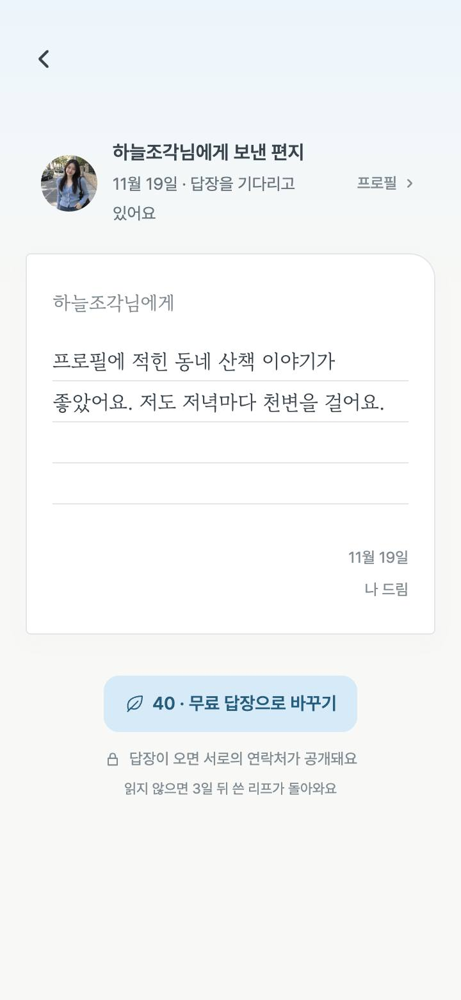
BSecondary M · 글자만큼 · 44 높이로 가운데. 덜 무겁고 고를 수 있는 일이라는 느낌
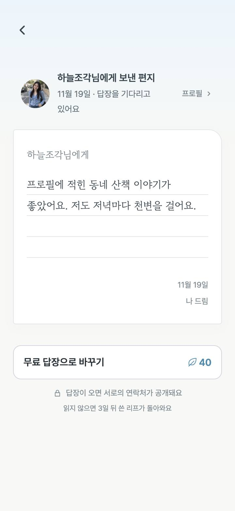
CTertiary L · 흰 바탕 · 왼쪽 글자 · 오른쪽 리프 40. 차분하지만 바탕색은 흰색
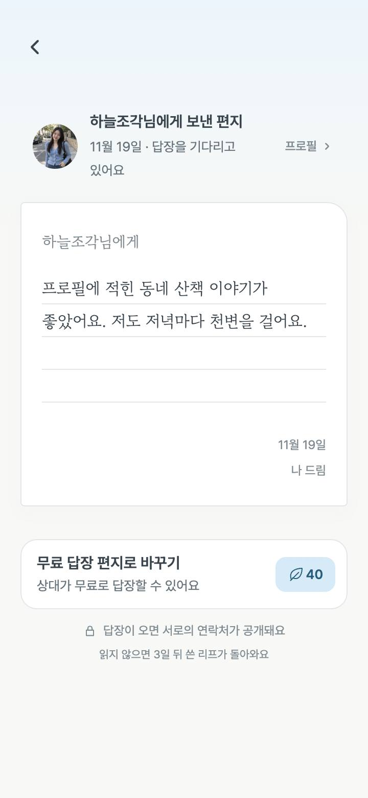
D카드 줄 + Secondary S · 무엇이 바뀌는지 한 줄 + 오른쪽 "40" 버튼